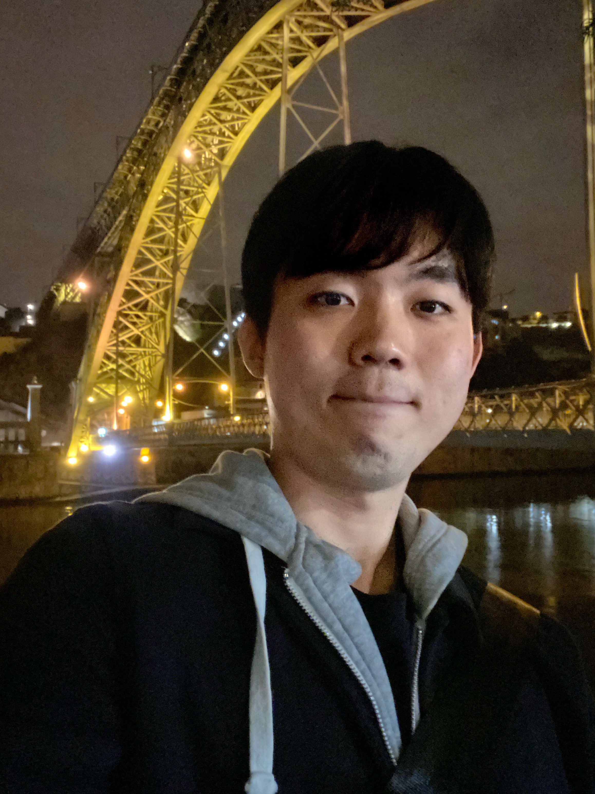

Yangwoo Lee
Construction Material Engineer
Education
BA,Civil and Environmental Engineering,Seoul National University
2015~2020
MA,Civil and Environmental Engineering,Seoul National University
2020~(2023.3 Grad)

Research Interest
- Construction Material
- Mechanics of Materials
- Building Materials
- Raman spectroscopy
- Density Functional Theory
- Nanoscale materials
- Nanotechnology
- Nanomaterials
Projects
-
"Development of multi-scale based technology for evaluating the internal dispersion of functional nanomaterials in cementitious composites, Institute of Construction and Environmental Engineering, Seoul Nation University, Korea (Jan. 2021 ~ Present)
Awards and Honors
- Wooduk Graduate Scholarship, Wooduk Foundation, Korea (May. 2022 ~ Dec. 2022)
- BrainKorea21 Four, Seoul National University, Korea (Mar. 2021 ~ Dec. 2022)
- Shorterm Study abroad scholarship, Seoul National University, Korea (Sep. 2019)
- Merit-based Scholarship, Seoul National University, Korea (Sep. 2018)
- Alumini Association of Department of Civil Enginieering SNU Scholarship, Seoul National University, Korea (Mar. 2018)
- Work-Study Scholarship 2, Seoul National University, Korea (Sep. 2015)
Publications & Conferences
- **Yangwoo Lee**, Hee-jeong Kim, Juhyuk Moon (2022) Manuscript in preparation.
- Seungchan Kim, **Yangwoo Lee**, J. Plank, Juhyuk Moon (2022) Fundamental discrepancy of chemical reactivity of tricalcium oxy silicate(alite), dicalcium silicate (belite), and their polymorphs: A density functional theory study. In progress.
- Hyunuk Kang, **Yangwoo Lee**, Jihoon Lee, Juhyuk Moon (2022) Investigation of the clinker phase variations mechanism induced by the micro-grinding program. Manuscript in preparation.
- **Yangwoo Lee,** Juhyuk Moon, "Quantitative Evaluation of Lime Paste Using Raman Spectroscopy", 2022 Spring Korea Concrete Institute Conference, Jeju, Korea (May. 2022)
- ** Yangwoo Lee,** Juhyuk Moon, "Theoretical Investigation of the Energies, Structures, and Growth Properties of Artinite Surfaces", 2021 Fall Korea Concrete Institute Conference, Gyeongju, Korea (Nov. 2021)
- **Yangwoo Lee**, Juhyuk Moon, "Evaluation of Service Life of Reinforced Concrete Structure Exposed to Marine Environment through Probabilistic Method", 2021 Spring Korea Concrete Institute Conference, Yeosu, Korea (May. 2021)
Research Experience
Researcher at Civil Environmental Engineering, College of Engineering, Seoul National
University, Korea (Mar. 2021 ~ Present) / Development of Raman Spectroscopy Analysis Scheme
Teaching Experience
**Teaching Assistant** (2021-S)
- 201 001: Mechanics of Materials and Lab.
Skills and Techniques
**Language:** English: TOEFL: 102/120
GRE: Verbal/Quant/Writing 157/170/3.0
Korean: Native
**Tool:** Raman Spectroscopy, TGA, DFT
**Computer:** Linux, R, Matlab, Go, Python
EXTRA-CURRICULAR ACTIVITIES
**KATUSA,** 630th Clearance Company**,** Pyeongtaek, South Korea**/**2016-2018
Served in the Army for two years as a KATUSA (Korean Army Augmented to the United State Army) which is a mandatory obligation in South Korea. Selected as a KATUSA based on a TOEIC test.
Promoted from a private to a sergeant.
- **Editor in chief** at Gong-dae-sang-sang (press release of college of engineering, SNU)/2015-2020
- Edited 10+ articles & revised 50+ articles.
- Organized 10+ camp for young engineering frontiers & counseled 100+ students.